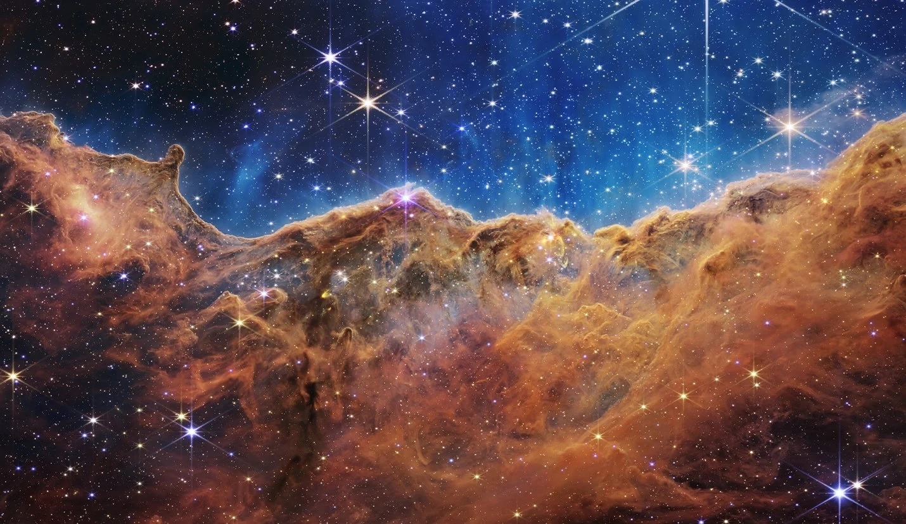

Mengenal Teleskop James Webb

Sebelumnya, Teleskop Webb diberi nama Next Generation Space Telescope (NGST). Pada September 2002, nama teleskop diganti menurut nama seorang administrator NASA, James Webb. Teleskop ini direncanakan untuk mengorbit matahari dengan jarak 1,5 juta kilometer dari Bumi. Teleskop Webb merupakan kolaborasi internasional dari NASA, ESA (European Space Agency), dan Canadian Space Agency (CSA). Teleskop ini menjadi teleskop terbesar yang pernah diluncurkan ke luar angkasa.
Foto pertama oleh Teleskop James Webb
Gambar yang nampaknya membentuk sebuah lembah dan gunung nan cantik yang dikelilingi berbagai bintang gemerlap itu sebenarnya adalah pucuk dari lokasi yang disebut poin "NGC 3324" di Nebula Carina, yang membentuk sebuah bintang baru. Tertangkapnya gambar tersebut dengan cahaya infrared oleh Teleskop Luar Angkasa James Webb ini menunjukkan pertama kalinya proses sebuah bintang baru terbentuk.